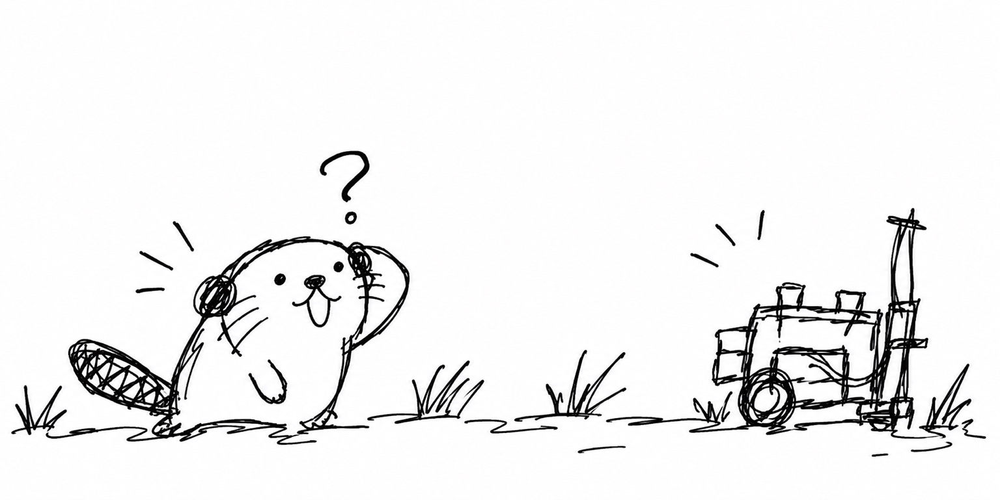
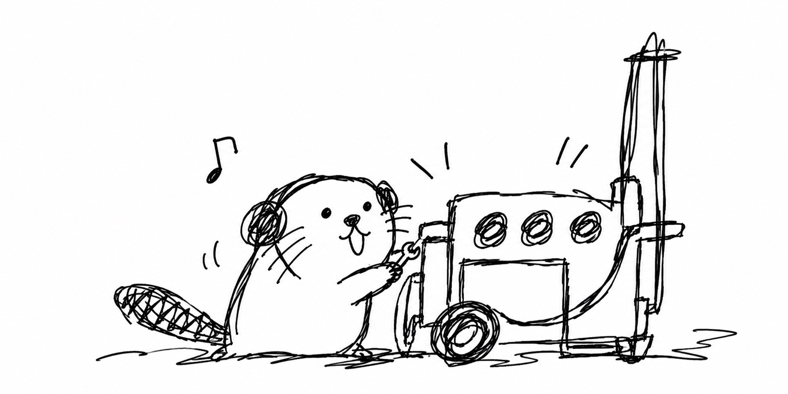
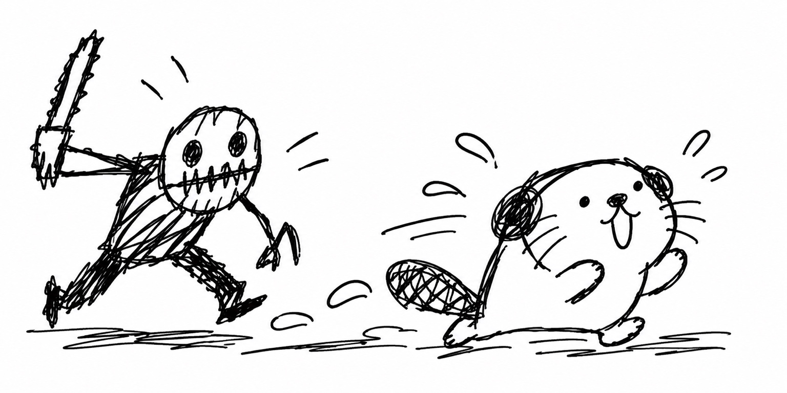
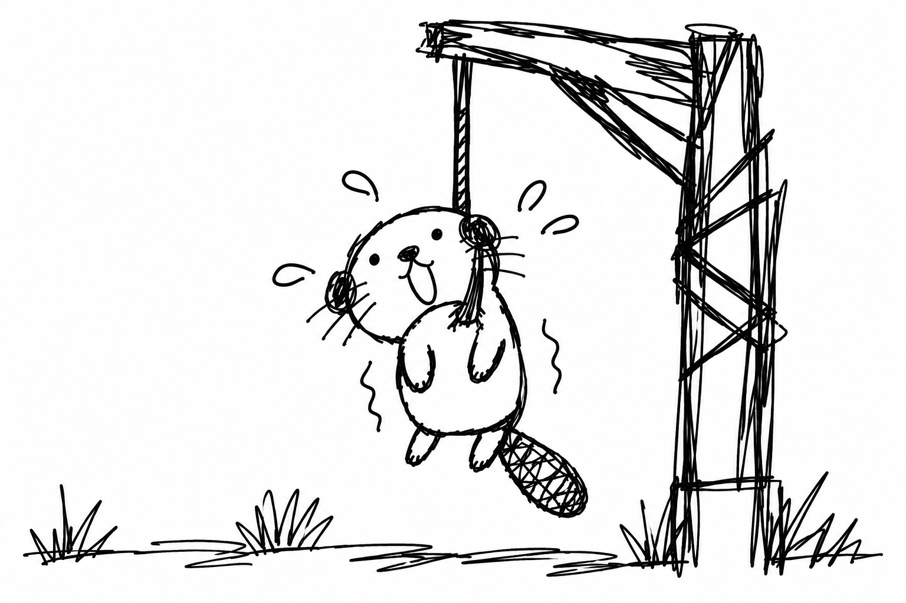
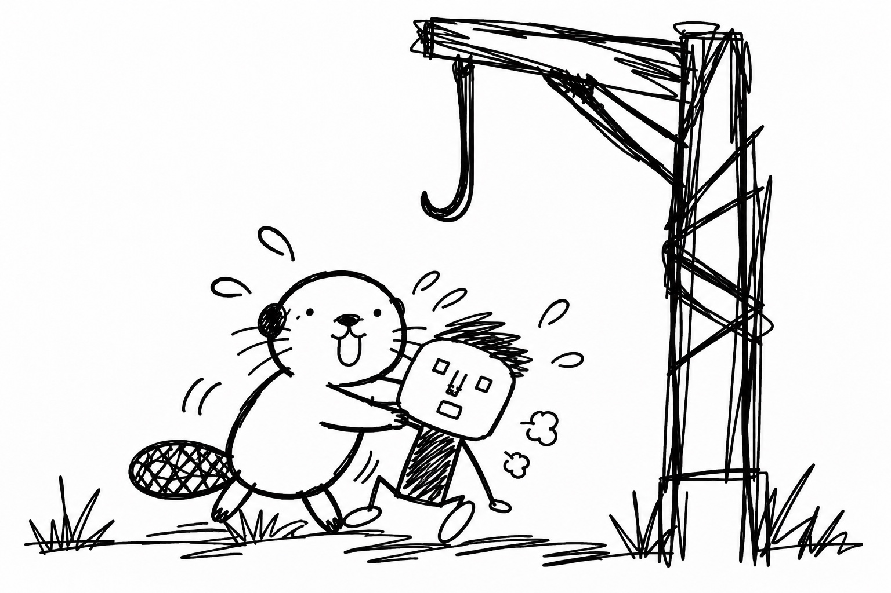
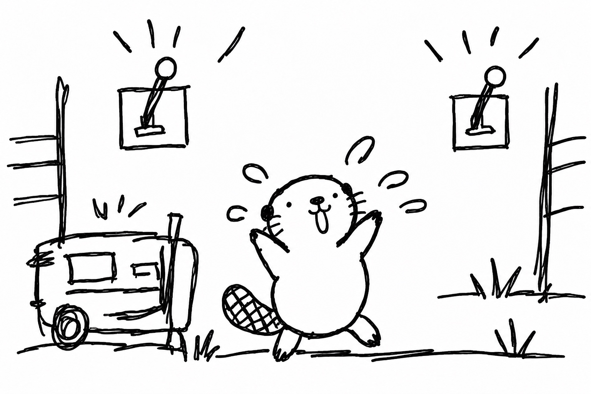
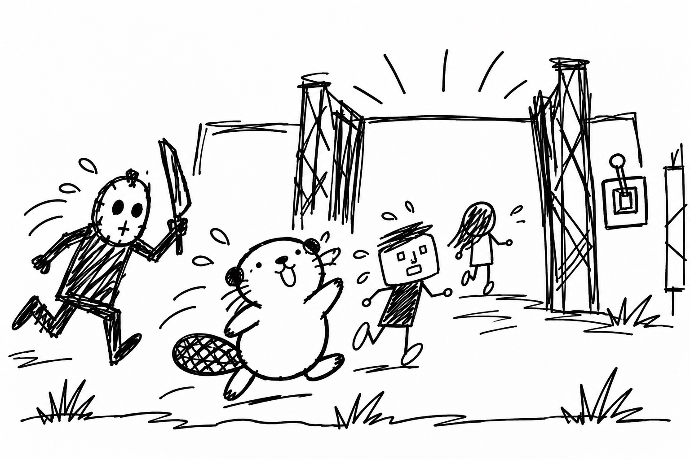
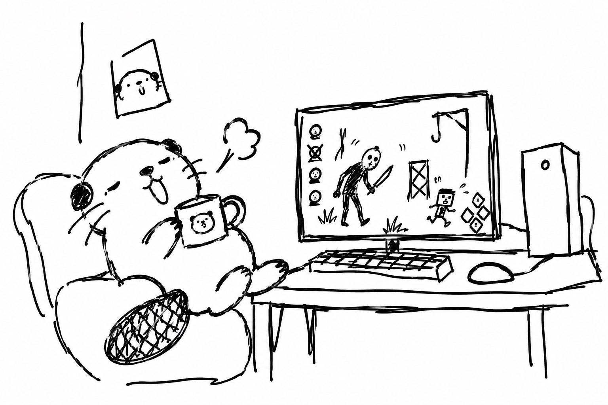
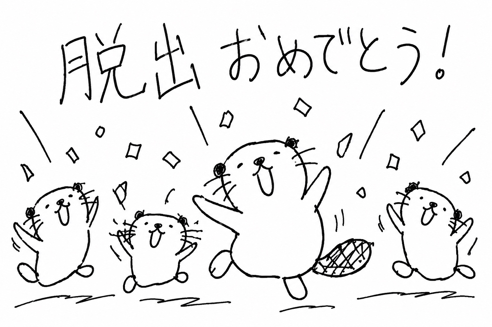

```html
<!DOCTYPE html>
<html lang="ja">
<head>
@@ -6,6 +7,9 @@
<meta name="description" content="逃げラッコ式DbD立ち回りガイド。プレイ時間100時間未満の初心者向けに、試合開始から脱出までの立ち回りを紹介。">
<title>100時間未満｜オススメの立ち回り</title>

  <!-- Supabase -->
  <script src="https://cdn.jsdelivr.net/npm/@supabase/supabase-js@2"></script>

<style>
:root {
--bg: #f4f0e7;
@@ -153,7 +157,6 @@
box-shadow: 0 5px 18px rgba(48, 39, 31, .04);
}

    /* 絆の重要カード */
.bond-notice {
display: flex;
align-items: center;
@@ -188,7 +191,6 @@
line-height: 1.55;
}

    /* 各章の要点 */
.chapter-tip {
margin: -8px 0 22px;
padding: 10px 15px;
@@ -210,7 +212,6 @@
letter-spacing: .04em;
}

    /* 目次エリア */
.chapter-toc {
margin: 26px 0 34px;
padding: 20px;
@@ -274,7 +275,6 @@
color: var(--teal);
}

    /* 各章タイトル：文字は左、イラストは右 */
.chapter-title {
display: flex;
align-items: center;
@@ -301,7 +301,6 @@
border-radius: 8px;
}

    /* ページ最下部の脱出おめでとうイラスト */
.congrats-illustration {
margin: 34px auto 8px;
text-align: center;
@@ -420,28 +419,19 @@
color: var(--teal);
}

    /* =========================
       コメント欄
       ========================= */

    /* コメント欄 */
.comments-section {
      margin-top: 46px;
      padding-top: 34px;
      margin-top: 50px;
      padding-top: 36px;
border-top: 2px solid var(--border);
}

    .comments-title {
      margin: 0 0 8px;
      padding: 13px 18px;
      background: var(--teal-light);
      border-left: 5px solid var(--teal);
      border-radius: 8px;
      font-size: clamp(21px, 3vw, 29px);
      line-height: 1.5;
    .comments-section h2 {
      margin-top: 0;
}

.comments-lead {
      margin: 0 0 22px;
      margin-bottom: 22px;
color: var(--muted);
font-size: .95rem;
}
@@ -451,25 +441,25 @@
background: #f8f3e9;
border: 1px solid var(--border);
border-radius: 14px;
      margin-bottom: 28px;
}

.comment-form label {
display: block;
margin-bottom: 7px;
      font-size: .9rem;
font-weight: 800;
      font-size: .92rem;
}

.comment-form input,
.comment-form textarea {
display: block;
width: 100%;
      padding: 11px 13px;
      border: 1px solid #d6cbbb;
      border-radius: 8px;
      background: #fffdf8;
      margin-bottom: 16px;
      padding: 12px 14px;
      background: #fff;
color: var(--text);
      border: 1px solid #d7ccbd;
      border-radius: 9px;
font: inherit;
outline: none;
}
@@ -485,14 +475,9 @@
resize: vertical;
}

    .comment-field {
      margin-bottom: 16px;
    }

.comment-submit {
display: inline-block;
      margin-top: 4px;
      padding: 11px 22px;
      padding: 11px 24px;
border: 0;
border-radius: 24px;
background: var(--teal);
@@ -509,63 +494,32 @@

.comment-submit:disabled {
opacity: .55;
      cursor: wait;
      cursor: not-allowed;
}

    .comment-note {
    .comment-status {
      min-height: 1.6em;
margin: 12px 0 0;
color: var(--muted);
      font-size: .82rem;
      line-height: 1.6;
    }

    .comment-status {
      display: none;
      margin-top: 12px;
      padding: 10px 13px;
      border-radius: 8px;
font-size: .9rem;
      font-weight: 700;
    }

    .comment-status.show {
      display: block;
    }

    .comment-status.success {
      background: #e7f0ee;
      color: #376c6a;
    }

    .comment-status.error {
      background: #f7e8e5;
      color: #9a4037;
}

.comment-list {
display: grid;
gap: 14px;
      margin-top: 28px;
}

    .comment-empty {
      padding: 20px;
      text-align: center;
      color: var(--muted);
      background: #fbf7ef;
      border: 1px solid var(--border);
      border-radius: 12px;
    }

    .comment-card {
      padding: 17px 18px;
      background: #fbf7ef;
    .comment-item {
      padding: 18px 20px;
      background: #fff;
border: 1px solid var(--border);
border-radius: 12px;
}

.comment-meta {
display: flex;
      align-items: center;
      align-items: baseline;
justify-content: space-between;
gap: 12px;
margin-bottom: 8px;
@@ -577,16 +531,24 @@
}

.comment-date {
      flex-shrink: 0;
color: var(--muted);
font-size: .78rem;
      white-space: nowrap;
}

.comment-body {
margin: 0;
white-space: pre-wrap;
overflow-wrap: anywhere;
      line-height: 1.75;
    }

    .comment-empty {
      padding: 22px;
      background: #fbf7ef;
      border: 1px solid var(--border);
      border-radius: 12px;
      color: var(--muted);
      text-align: center;
}

.back-link {
@@ -765,10 +727,6 @@
flex-direction: column;
gap: 2px;
}

      .comment-date {
        font-size: .74rem;
      }
}

@media (max-width: 380px) {
@@ -847,7 +805,11 @@ <h1>100時間未満｜オススメの立ち回り</h1>
</div>
</div>

      <p>パーク構成がわからない人は<strong><a href="perks.html">パーク構成へのリンク</a></strong>を参考にしてね。じゃあいくよ🦦</p>
      <p>
        パーク構成がわからない人は
        <strong><a href="perks.html">パーク構成へのリンク</a></strong>
        を参考にしてね。じゃあいくよ🦦
      </p>

<nav class="chapter-toc" aria-label="立ち回り講座の目次">

@@ -870,42 +832,77 @@ <h1>100時間未満｜オススメの立ち回り</h1>
</nav>

<div class="chapter">
        <h2 id="chapter-1" class="chapter-title"><span>① 開始直後の立ち回り</span></h2>
        <div class="chapter-tip"><span>今回のポイント</span>まず走って発電機を探そう！</div>
        <h2 id="chapter-1" class="chapter-title">
          
          <span>① 開始直後の立ち回り</span>
        </h2>

        <div class="chapter-tip">
          <span>今回のポイント</span>
          まず走って発電機を探そう！
        </div>

<div class="video-wrap">
          <video controls playsinline preload="auto" muted
            onloadedmetadata="this.currentTime=0.1">
          <video controls playsinline preload="auto" muted onloadedmetadata="this.currentTime=0.1">
<source src="videos/nigerakko_new_01_blur_names.mp4" type="video/mp4">
</video>
</div>

        <p>まず走って発電機を探す。全力疾走（スプバ）を入れててもまず走る。キラーが何かよくわからんところからよくわからんことしてきてもまず走る。これ「逃げラッコ式🦦」では鉄則。</p>
        <p>
          まず走って発電機を探す。全力疾走（スプバ）を入れててもまず走る。
          キラーが何かよくわからんところからよくわからんことしてきてもまず走る。
          これ「逃げラッコ式🦦」では鉄則。
        </p>

        <p>このとき絆で近くの味方の動きを確認して、できるだけ自分は個別行動になるのが望ましいけど、味方がついてきたり、同じ発電機を回そうとしてくるなら気にせず一緒に発電機を回そう。それはそれで速いからね。とにかく目についた発電機に張りつこう🦦</p>
        <p>
          このとき絆で近くの味方の動きを確認して、できるだけ自分は個別行動になるのが望ましいけど、
          味方がついてきたり、同じ発電機を回そうとしてくるなら気にせず一緒に発電機を回そう。
          それはそれで速いからね。とにかく目についた発電機に張りつこう🦦
        </p>

        <p><strong>【注意点】</strong>明らかにマップの中央だと思われる場所には走らない！中央がどこかわからないってんならしょうがないけど、自分がマップの端っこにいるってわかったら端っこ沿いに走るのが良いよ！</p>
        <p>
          <strong>【注意点】</strong>
          明らかにマップの中央だと思われる場所には走らない！
          中央がどこかわからないってんならしょうがないけど、
          自分がマップの端っこにいるってわかったら端っこ沿いに走るのが良いよ！
        </p>

        <p>なんかでっかい建築物があるなら真ん中らへんかもって思っても良いよ。俺もそんな感覚でやってるからね🦦</p>
        <p>
          なんかでっかい建築物があるなら真ん中らへんかもって思っても良いよ。
          俺もそんな感覚でやってるからね🦦
        </p>

<p>（違う場合ももちろんあるよ。でもそこまで頑張って覚えなくて良いよ。）</p>
</div>

<div class="chapter">
        <h2 id="chapter-2" class="chapter-title"><span>② 発電機を回してる途中の立ち回り</span></h2>
        <div class="chapter-tip"><span>今回のポイント</span>味方の動きを確認しながら発電しよう！</div>
        <h2 id="chapter-2" class="chapter-title">
          
          <span>② 発電機を回してる途中の立ち回り</span>
        </h2>

        <div class="chapter-tip">
          <span>今回のポイント</span>
          味方の動きを確認しながら発電しよう！
        </div>

<div class="video-wrap">
<video controls playsinline preload="metadata">
<source src="videos/1a11be20ccf56-master_playlist_blur_names.mp4" type="video/mp4">
</video>
</div>

        <p>絆のオーラで見える範囲の人の行動を見てあの人何してるかなーってぼけーっと考えてみよう。発電機を回してたり、トーテムを撫で撫でしてたりしてたりしたら左のアイコンで答え合わせできるぞ🦦</p>
        <p>
          絆のオーラで見える範囲の人の行動を見てあの人何してるかなーってぼけーっと考えてみよう。
          発電機を回してたり、トーテムを撫で撫でしてたりしてたりしたら左のアイコンで答え合わせできるぞ🦦
        </p>

<div class="image-placeholder">〈心音がしてる時の画像〉</div>

        <p>キラーの心音が聞こえてきたら、まだ発電機から手は離さずに、周囲の様子と味方のアイコンをチラチラ見よう。味方のアイコンがぴこぴこ動いていたらその人がチェイス中だから気にせず発電を続行だ。</p>
        <p>
          キラーの心音が聞こえてきたら、まだ発電機から手は離さずに、周囲の様子と味方のアイコンをチラチラ見よう。
          味方のアイコンがぴこぴこ動いていたらその人がチェイス中だから気にせず発電を続行だ。
        </p>

<div class="video-wrap">
<video controls playsinline preload="metadata">
@@ -917,62 +914,106 @@ <h2 id="chapter-2" class="chapter-title">

<div class="chapter">
        <h2 id="chapter-3" class="chapter-title"><span>③ キラーから逃げる時の立ち回り</span></h2>
        <div class="chapter-tip"><span>今回のポイント</span>とにかくまっすぐ逃げよう！</div>
        <h2 id="chapter-3" class="chapter-title">
          
          <span>③ キラーから逃げる時の立ち回り</span>
        </h2>

        <div class="chapter-tip">
          <span>今回のポイント</span>
          とにかくまっすぐ逃げよう！
        </div>

<div class="video-wrap">
<video controls playsinline preload="metadata">
<source src="videos/nigerakko_new_02_blur_names.mp4" type="video/mp4">
</video>
</div>

        <p>「逃げラッコ式」では長時間チェイスはしようとしないよ。とにかくまっすぐ逃げるんだ。無傷のときは１回だけキラーに背中を押してもらえるよ。</p>
        <p>
          「逃げラッコ式」では長時間チェイスはしようとしないよ。
          とにかくまっすぐ逃げるんだ。無傷のときは１回だけキラーに背中を押してもらえるよ。
        </p>

        <p>※キラーからもらう１発目の攻撃は攻撃と思わない。攻撃をくらったら「背中押してくれてありがとう！」って言ってみよう。それが「逃げラッコ式」だよ🦦</p>
        <p>
          ※キラーからもらう１発目の攻撃は攻撃と思わない。
          攻撃をくらったら「背中押してくれてありがとう！」って言ってみよう。
          それが「逃げラッコ式」だよ🦦
        </p>

<div class="video-wrap">
<video controls playsinline preload="metadata">
<source src="videos/nigerakko_new_03_blur_names.mp4" type="video/mp4">
</video>
</div>

        <p>自分がチェイスしてから吊られるまでの間、何が起きたか振り返ってみよう。残りの発電機がいつの間にか減っている、吊られていた味方が復帰している、負傷してた味方が回復している、味方が遠くで全員発電作業に取り掛かっている…</p>
        <p>
          自分がチェイスしてから吊られるまでの間、何が起きたか振り返ってみよう。
          残りの発電機がいつの間にか減っている、吊られていた味方が復帰している、
          負傷してた味方が回復している、味方が遠くで全員発電作業に取り掛かっている…
        </p>

<p>それが自分の成果だよ。あとは気長に救助が来るのを待とう🦦</p>
</div>

<div class="chapter">
        <h2 id="chapter-4" class="chapter-title"><span>④ 味方に救助してもらった後の立ち回り</span></h2>
        <div class="chapter-tip"><span>今回のポイント</span>まずは安全な場所に逃げよう！</div>
        <h2 id="chapter-4" class="chapter-title">
          
          <span>④ 味方に救助してもらった後の立ち回り</span>
        </h2>

        <div class="chapter-tip">
          <span>今回のポイント</span>
          まずは安全な場所に逃げよう！
        </div>

<div class="video-wrap">
<video controls playsinline preload="metadata">
<source src="videos/nigerakko_dbd_video_06_blur_names.mp4" type="video/mp4">
</video>
</div>

        <p>救助されたら回復のことは一旦考えない。10秒間逃げる痕跡が消えるんだ。この10秒でとりあえず安全そうな場所に逃げ込もう。ちょっとした隠密ってやつだよ。</p>
        <p>
          救助されたら回復のことは一旦考えない。
          10秒間逃げる痕跡が消えるんだ。この10秒でとりあえず安全そうな場所に逃げ込もう。
          ちょっとした隠密ってやつだよ。
        </p>

<div class="video-wrap">
<video controls playsinline preload="metadata">
<source src="videos/nigerakko_dbd_video_07_blur_names.mp4" type="video/mp4">
</video>
</div>

        <p>動かずにじっと絆で味方の様子を見てみよう。安全そうに発電機を回している味方がいたらその人のところに行ってあげるのが良いと思うよ、回復してもらえるかもしれないしね🦦</p>
        <p>
          動かずにじっと絆で味方の様子を見てみよう。
          安全そうに発電機を回している味方がいたらその人のところに行ってあげるのが良いと思うよ、
          回復してもらえるかもしれないしね🦦
        </p>

<div class="video-wrap">
<video controls playsinline preload="metadata">
<source src="videos/nigerakko_dbd_video_08_blur_names.mp4" type="video/mp4">
</video>
</div>

        <p>警戒を入れてる人はキラーが発電機を破壊したりした時に通知が来てオーラが見えるよ。そこの発電機を引き継いであげることを頭の片隅に入れておこう。誰かのチェイスが始まったらそこの発電機を回しに行くチャンスだよ🦦</p>
        <p>
          警戒を入れてる人はキラーが発電機を破壊したりした時に通知が来てオーラが見えるよ。
          そこの発電機を引き継いであげることを頭の片隅に入れておこう。
          誰かのチェイスが始まったらそこの発電機を回しに行くチャンスだよ🦦
        </p>
</div>

<div class="chapter">
        <h2 id="chapter-5" class="chapter-title"><span>⑤ 味方が吊られてしまった時の立ち回り</span></h2>
        <div class="chapter-tip"><span>今回のポイント</span>味方の状況を見て救助を判断しよう！</div>
        <h2 id="chapter-5" class="chapter-title">
          
          <span>⑤ 味方が吊られてしまった時の立ち回り</span>
        </h2>

        <div class="chapter-tip">
          <span>今回のポイント</span>
          味方の状況を見て救助を判断しよう！
        </div>

<p>ここはとっても大事！パターン化して、単純に考えよう🦦</p>

@@ -986,48 +1027,103 @@ <h3>【自分が救助に行くパターン】</h3>

<p><strong>全部左のアイコンを見ればわかるよ</strong></p>

        <p>救助したあとは味方が走ったら味方とは反対方向に走る。味方がその場でしゃがんだら回復してあげる（キラーが近づいてきたら見捨てて逃げようね🦦）</p>
        <p>
          救助したあとは味方が走ったら味方とは反対方向に走る。
          味方がその場でしゃがんだら回復してあげる
          （キラーが近づいてきたら見捨てて逃げようね🦦）
        </p>

<h3>【自分が救助に行かないパターン】</h3>

        <p>上のどれにも当てはまらない時。その時は全部他の人に任せよう。救助に時間がかかって2吊に入ってしまった時は「薄情な味方だなぁ」って他人事に思っとくよ、これが「逃げラッコ式」🦦</p>
        <p>
          上のどれにも当てはまらない時。その時は全部他の人に任せよう。
          救助に時間がかかって2吊に入ってしまった時は
          「薄情な味方だなぁ」って他人事に思っとくよ、これが「逃げラッコ式」🦦
        </p>
</div>

<div class="chapter">
        <h2 id="chapter-6" class="chapter-title"><span>⑥ 発電機が5台上がった時の立ち回り</span></h2>
        <div class="chapter-tip"><span>今回のポイント</span>ゲートを開けて逃げ道を確保しよう！</div>
        <h2 id="chapter-6" class="chapter-title">
          
          <span>⑥ 発電機が5台上がった時の立ち回り</span>
        </h2>

        <div class="chapter-tip">
          <span>今回のポイント</span>
          ゲートを開けて逃げ道を確保しよう！
        </div>

<div class="image-placeholder">〈通電した時の画像〉</div>

        <p>2箇所あるゲートの位置を確認して、近い方にまっすぐ最短距離を走っていくよ。ただしそっちのゲートにキラーがいる時は反対のゲートに向かおう。</p>
        <p>
          2箇所あるゲートの位置を確認して、近い方にまっすぐ最短距離を走っていくよ。
          ただしそっちのゲートにキラーがいる時は反対のゲートに向かおう。
        </p>

        <p>レバーを入れたら上げ切っちゃおう。ここで寸止めしたりとか、敢えて半分で止めるとか色気付いたことはしない。逃げ道を確保するのが最優先事項だよ！</p>
        <p>
          レバーを入れたら上げ切っちゃおう。
          ここで寸止めしたりとか、敢えて半分で止めるとか色気付いたことはしない。
          逃げ道を確保するのが最優先事項だよ！
        </p>

<div class="image-placeholder">〈味方がレバーを入れてる時の画像〉</div>

        <p>味方が先にレバーを入れてる時は、近くの岩陰とかに隠れてじっと待っておこう。キラーが来て味方が離れてしまった時は自分がすかさず引き継いで、ゲートを開けてしまおう。</p>
        <p>
          味方が先にレバーを入れてる時は、近くの岩陰とかに隠れてじっと待っておこう。
          キラーが来て味方が離れてしまった時は自分がすかさず引き継いで、ゲートを開けてしまおう。
        </p>

<p>さあ脱出は目前だ🦦</p>
</div>

<div class="chapter">
        <h2 id="chapter-7" class="chapter-title"><span>⑦ ゲート解放後の立ち回り</span></h2>
        <div class="chapter-tip"><span>今回のポイント</span>逃げられるなら逃げちゃっていい！</div>
        <h2 id="chapter-7" class="chapter-title">
          
          <span>⑦ ゲート解放後の立ち回り</span>
        </h2>

        <div class="chapter-tip">
          <span>今回のポイント</span>
          逃げられるなら逃げちゃっていい！
        </div>

        <p>逃げれる状況になったらもう逃げちゃって良いよ。ここまで行けば自分の功績、逃げたって良いんだよ。実際に命がかかってたら…まあ逃げるよね🦦</p>
        <p>
          逃げれる状況になったらもう逃げちゃって良いよ。
          ここまで行けば自分の功績、逃げたって良いんだよ。
          実際に命がかかってたら…まあ逃げるよね🦦
        </p>

<div class="image-placeholder">〈可哀想な味方がいた時の画像〉</div>

        <p>ここからはオマケだけど、逃げ遅れた可哀想の味方がいた時は、自分が代わりに死ぬ覚悟があるなら助けてあげても良いよ。無傷なら肉壁になってあげるとか、ゲート内に負傷した味方がいるなら回復してあげるとか、色々してあげたらいいよ。</p>
        <p>
          ここからはオマケだけど、逃げ遅れた可哀想の味方がいた時は、
          自分が代わりに死ぬ覚悟があるなら助けてあげても良いよ。
          無傷なら肉壁になってあげるとか、ゲート内に負傷した味方がいるなら回復してあげるとか、
          色々してあげたらいいよ。
        </p>

        <p>これは別に「逃げラッコ式」とは違うから、好きに判断してやったら良いよ。</p>
        <p>
          これは別に「逃げラッコ式」とは違うから、好きに判断してやったら良いよ。
        </p>

        <p>でもね、キラーのパークには「誰も死から逃れられない（ノーワン）」や「血の番人」っていう恐ろしいパークがあるんだ。今は知らなくても別に良いけど、とりあえずヤバいからゲートが開いたらすぐに逃げることをオススメするよ🦦</p>
        <p>
          でもね、キラーのパークには「誰も死から逃れられない（ノーワン）」や
          「血の番人」っていう恐ろしいパークがあるんだ。
          今は知らなくても別に良いけど、とりあえずヤバいから
          ゲートが開いたらすぐに逃げることをオススメするよ🦦
        </p>
</div>

<div class="chapter">
        <h2 id="chapter-8" class="chapter-title"><span>⑧ 無事に脱出したら</span></h2>
        <div class="chapter-tip"><span>今回のポイント</span>味方やキラーのパークを見てみよう！</div>
        <h2 id="chapter-8" class="chapter-title">
          
          <span>⑧ 無事に脱出したら</span>
        </h2>

        <div class="chapter-tip">
          <span>今回のポイント</span>
          味方やキラーのパークを見てみよう！
        </div>

<p>味方やキラーの使っていたパークを見てみよう。</p>

@@ -1037,83 +1133,65 @@ <h2 id="chapter-8" class="chapter-title">

        <p>とか、漠然とそんなこと考えながら感傷に浸ろう。一番ホッとできる時間だからね。</p>
        <p>
          とか、漠然とそんなこと考えながら感傷に浸ろう。
          一番ホッとできる時間だからね。
        </p>

<p>脱出おめでとう🦦</p>
</div>

<div class="congrats-illustration">
        
        
</div>

<div class="ending">
逃げラッコ式DbD立ち回り 🦦
</div>

      <!-- =========================
           コメント欄
           ========================= -->

      <!-- コメント欄 -->
<section class="comments-section" aria-labelledby="comments-title">

        <h2 id="comments-title" class="comments-title">
          💬 コメント
        </h2>
        <h2 id="comments-title">💬 コメント</h2>

<p class="comments-lead">
          立ち回りについての感想や質問など、気軽に書いてね🦦
          このページを読んだ感想や、実際にやってみた感想を書いてね🦦
</p>

<form id="comment-form" class="comment-form">

          <div class="comment-field">
            <label for="comment-name">名前</label>
            <input
              type="text"
              id="comment-name"
              name="name"
              maxlength="30"
              placeholder="ラッコ"
              required
            >
          </div>
          <label for="comment-name">名前</label>
          <input
            id="comment-name"
            name="name"
            type="text"
            maxlength="30"
            placeholder="ラッコ"
            required
          >

          <div class="comment-field">
            <label for="comment-body">コメント</label>
            <textarea
              id="comment-body"
              name="body"
              maxlength="1000"
              placeholder="立ち回りについて何かあればどうぞ🦦"
              required
            ></textarea>
          </div>
          <label for="comment-body">コメント</label>
          <textarea
            id="comment-body"
            name="comment"
            maxlength="1000"
            placeholder="感想を書いてね🦦"
            required
          ></textarea>

          <button
            type="submit"
            id="comment-submit"
            class="comment-submit"
          >
          <button id="comment-submit" class="comment-submit" type="submit">
コメントを投稿する
</button>

          <p class="comment-note">
            ※投稿したコメントは確認後に表示されます。
          </p>

          <div
            id="comment-status"
            class="comment-status"
            role="status"
            aria-live="polite"
          ></div>

          <p id="comment-status" class="comment-status" aria-live="polite"></p>
</form>

<div id="comment-list" class="comment-list">
          <div class="comment-empty">
            コメントを読み込んでいます🦦
          </div>
          <div class="comment-empty">コメントを読み込んでいます……🦦</div>
</div>

</section>
@@ -1127,44 +1205,35 @@ <h2 id="comments-title" class="comments-title">
逃げラッコ式DbD立ち回り 🦦
</footer>


  <!-- Supabase -->
  <script src="https://cdn.jsdelivr.net/npm/@supabase/supabase-js@2"></script>

<script>
    /* =========================================
       Supabase設定
       ========================================= */
    const SUPABASE_URL = "https://goxuhivbgaextkhyobmw.supabase.co";

    const SUPABASE_URL = "ここにパークページと同じSUPABASE_URL";
    const SUPABASE_PUBLISHABLE_KEY = "ここにパークページと同じSUPABASE_PUBLISHABLE_KEY";
    // Supabase Dashboard の Publishable key
    const SUPABASE_PUBLISHABLE_KEY =
      "sb_publishable_81GtdIt16_VTgJq4bV3RNw_MoA7ZuPV";

    const supabaseClient = supabase.createClient(
    const PAGE_SLUG = "playstyle";

    const supabaseClient = window.supabase.createClient(
SUPABASE_URL,
SUPABASE_PUBLISHABLE_KEY
);

    /* このページ専用の識別子 */
    const PAGE_SLUG = "playstyle";


    /* =========================================
       コメント表示
       ========================================= */

    const commentForm = document.getElementById("comment-form");
    const commentName = document.getElementById("comment-name");
    const commentBody = document.getElementById("comment-body");
    const commentSubmit = document.getElementById("comment-submit");
    const commentStatus = document.getElementById("comment-status");
const commentList = document.getElementById("comment-list");

function escapeHtml(value) {
      return String(value)
        .replaceAll("&", "&amp;")
        .replaceAll("<", "&lt;")
        .replaceAll(">", "&gt;")
        .replaceAll('"', "&quot;")
        .replaceAll("'", "&#039;");
      const div = document.createElement("div");
      div.textContent = value ?? "";
      return div.innerHTML;
}

    function formatCommentDate(dateString) {
      const date = new Date(dateString);
    function formatDate(value) {
      const date = new Date(value);

if (Number.isNaN(date.getTime())) {
return "";
@@ -1180,12 +1249,8 @@ <h2 id="comments-title" class="comments-title">
}

async function loadComments() {

      commentList.innerHTML = `
        <div class="comment-empty">
          コメントを読み込んでいます🦦
        </div>
      `;
      commentList.innerHTML =
        '<div class="comment-empty">コメントを読み込んでいます……🦦</div>';

const { data, error } = await supabaseClient
.from("diary_comments")
@@ -1195,128 +1260,48 @@ <h2 id="comments-title" class="comments-title">
.order("created_at", { ascending: false });

if (error) {
        console.error("コメント取得エラー:", error);
        console.error("コメント読み込みエラー:", error);

        commentList.innerHTML = `
          <div class="comment-empty">
            コメントを読み込めませんでした。
          </div>
        `;
        commentList.innerHTML =
          '<div class="comment-empty">コメントを読み込めませんでした。</div>';

return;
}

if (!data || data.length === 0) {
        commentList.innerHTML = `
          <div class="comment-empty">
            まだコメントはありません。<br>
            最初のコメントを書いてみてね🦦
          </div>
        `;
        commentList.innerHTML =
          '<div class="comment-empty">まだコメントはありません。最初のコメントを書いてね🦦</div>';

return;
}

      commentList.innerHTML = data.map(comment => {

        const name = escapeHtml(
          comment.display_name || "名無しのラッコ"
        );

        const body = escapeHtml(
          comment.body || ""
        );

        const date = formatCommentDate(
          comment.created_at
        );

        return `
          <article class="comment-card">

            <div class="comment-meta">
              <span class="comment-name">
                ${name}
              </span>

              <time class="comment-date">
                ${escapeHtml(date)}
              </time>
            </div>

            <p class="comment-body">${body}</p>

          </article>
        `;

      }).join("");
    }


    /* =========================================
       コメント投稿
       ========================================= */

    const commentForm = document.getElementById("comment-form");
    const commentName = document.getElementById("comment-name");
    const commentBody = document.getElementById("comment-body");
    const commentSubmit = document.getElementById("comment-submit");
    const commentStatus = document.getElementById("comment-status");


    function showCommentStatus(message, type) {

      commentStatus.textContent = message;
      commentList.innerHTML = data.map(comment => `
        <article class="comment-item">
          <div class="comment-meta">
            <span class="comment-name">${escapeHtml(comment.display_name)}</span>
            <time class="comment-date" datetime="${escapeHtml(comment.created_at)}">
              ${escapeHtml(formatDate(comment.created_at))}
            </time>
          </div>

      commentStatus.className =
        "comment-status show " + type;
          <p class="comment-body">${escapeHtml(comment.body)}</p>
        </article>
      `).join("");
}


    commentForm.addEventListener("submit", async function(event) {

    commentForm.addEventListener("submit", async (event) => {
event.preventDefault();

const name = commentName.value.trim();
const body = commentBody.value.trim();

if (!name || !body) {

        showCommentStatus(
          "名前とコメントを入力してね🦦",
          "error"
        );

        commentStatus.textContent = "名前とコメントを入力してね🦦";
return;
}

      if (name.length > 30) {

        showCommentStatus(
          "名前は30文字以内で入力してね。",
          "error"
        );

        return;
      }

      if (body.length > 1000) {

        showCommentStatus(
          "コメントは1000文字以内で入力してね。",
          "error"
        );

        return;
      }


commentSubmit.disabled = true;
      commentSubmit.textContent = "投稿中…";

      commentStatus.className =
        "comment-status";

      commentStatus.textContent = "送信中……🦦";

const { error } = await supabaseClient
.from("diary_comments")
@@ -1329,44 +1314,27 @@ <h2 id="comments-title" class="comments-title">
}
]);


if (error) {

console.error("コメント送信エラー:", error);

        showCommentStatus(
          "コメントを送信できませんでした。",
          "error"
        );
        commentStatus.textContent =
          "コメントを送信できませんでした。もう一度試してね。";

commentSubmit.disabled = false;
        commentSubmit.textContent = "コメントを投稿する";

return;
}

      commentForm.reset();

      commentName.value = "";
      commentBody.value = "";

      showCommentStatus(
        "コメントを送信したよ！確認後に表示されます🦦",
        "success"
      );
      commentStatus.textContent =
        "コメントを送信しました！承認されると表示されます🦦";

commentSubmit.disabled = false;
      commentSubmit.textContent = "コメントを投稿する";

});


    /* =========================================
       初回読み込み
       ========================================= */

loadComments();

</script>

</body>
</html>
```
